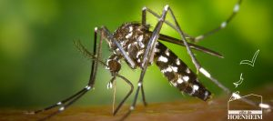
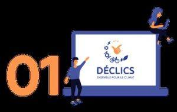

Frelon asiatique : agir dès maintenant !

Le frelon asiatique (Vespa velutina), reconnaissable à ses pattes jaunes, est aujourd’hui bien implanté sur notre territoire. Sa présence a un impact important sur la biodiversité, notamment sur les abeilles, et peut aussi causer des dégâts dans les jardins, vergers et espaces verts. 👉 La lutte commence au printemps (en février dès +12°C) par le […]
Moustique tigre – traitement d’avaloirs de rue

Dans le cadre du plan d’actions de lutte contre le moustique tigre engagé cette année par l’Eurométropole de Strasbourg, et suite à la candidature de la Ville de Hoenheim, les quartiers Crécerelles, Oiseaux, Hirondelles et La Lydia, rues de Mundolsheim et de l’Orangeraie ont été sélectionnés pour une lutte intégrée qui représente une superficie de […]
Des jeunes pousses, rue de la Fontaine

Les 28 et 29 janvier a eu lieu, la plantation de la haie avec l’association Alsace Nature, une action participative en faveur de la reconquête de la Trame Verte et Bleue urbaine au nord de Strasbourg conclue par une convention signée en juillet 2020, avec le soutien de Haies vives d’Alsace.
Les défis déclics 2021-2022

Les DEFIS DECLICS 2021-2022 Qu’est-ce que c’est ? Le programme Déclics permet aux citoyens de s’investir à leur échelle dans la lutte contre les émissions de gaz à effet de serre. Cette animation conviviale visant à modifier les comportements individuels et collectifs du quotidien, en adaptant ses pratiques grâce à des accompagnements et des conseils, […]
Les « 2 roues » s’offrent une seconde vie

Plus d’une quinzaine d’hoenheimois a répondu à l’appel au don de vélo, lancé dans le Vivre à Hoenheim, ce printemps. Au total, plus d’une vingtaine de vélos a été récupérée lors du ramassage organisé le samedi 10 avril entre 10h et midi par Vincent DEBES et Didier MERCK, conseiller municipal.